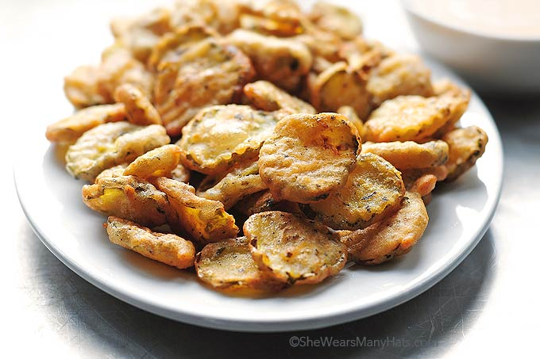

Fried Pickles
One of my favorite ball game snacks, these are fantastic with a side of ranch!

Ingredients:
- Pickles
- Eggs
- Flour
- Johnny's Seasoning
- oil
How to Make:
- Put egg in bowl, and whisk
- 1 cup of flour into a bowl
- 2 tablespoons of Johnny's seasnoning, added to flour, mix.
- Dip pickle into egg, and then into flour, and one last dip into egg
- Add 3 cups of oil to sauce pan, heat for 3 minutes on medium
- Put pickle in oil for 2 minutes
- Place cooked pickle on paper towel
Bon Appetit